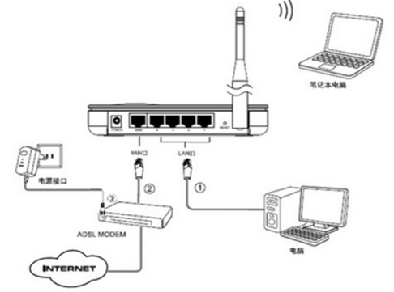

项目三 畅游因特网
任务1 认识互联网
因特网的概念
因特网（Internet）又称国际计算机互联网，是世界上最大、覆盖面最广的计算机互联网络，它将全世界不同国家、不同地区、不同部门和机构的不同类型的计算机和各种计算机网络（广域网、城域网、局域网等）连接在一起形成一个全球性网络。
Internet的发展
- 发展阶段
- 1969年，美国国防部研究计划管理局建立了ARPAnet，是Internet的雏形。
- 1983年，美国国防部通信局研制了TCP/IP协议，诞生了真正的Internet。
- 1985年，美国国家科学基金会建立了NSFnet，成为了Internet的骨干之一。
- 1994年4月，我国作为第71个国家加入Internet，形成四大骨干网：
- CERnet
- CSTnet
- Chinanet
- ChinaGBN
Internet协会
- ISOC：Internet的最高非赢利组织——Internet网络协会
- IAB：Internet网络体系结构研究会
- IRTF：Internet网络技术研究组
- IANA：Internet网络编号管理局
- RIPENIC：欧洲网络信息中心
- CNNIC：中国互联网络信息中心
Intranet
Intranet的称为企业内部网，是采用Internet技术建立的企业内部专用网络。它以TCP/IP协议作为基础，以Web为核心应用，构成统一和便利的信息交换平台
历届高考样题/真题
任务2 接入互联网
关于ISP
- Internet服务供应商（ISP）
- ISP是Internet Service Provider的缩写，即Internet服务供应商，是为用户提供Internet信息服务的公司和机构。ISP的作用主要有两方面：
- 为用户提供Internet接入服务；
- 为用户提供各类信息服务，如电子邮件、信息发布代理服务等。
- 中国的ISP运营商
- 三大基础运营商：中国电信、中国移动、中国联通
- 二级运营商：北京歌华有线宽带、北京电信通、益家宽带、创威宽带、东南网络、长城宽带、四川艾普宽带等
接入互联网的主流方式
- 电话接入
-
- 普通Modem（将数字信号变换成模拟信号称为调制；解调是在接收端把模拟信号还原成数字信号）拨号接入方式
- ISDN（综合业务数字网，即一线通）拨号接入方式
- ADSL（非对称数字用户环路，下载速率远大于上传速率）虚拟拨号接入方式
- 有线电视接入（Cable Modem）
-
- 优点：抗干扰能力强，共享介质
- 缺点：Cable Modem的用户是共享带宽的
- 光纤接入
- FTTx－FTTZ、FTTB、FTTO、FTTH
- 无线接入
-
- GPRS－通用分组无线业务
- 3G－高速数据传输的蜂窝移动通信技术
- Bluetooth－10米传输距离
- 无线局域网（WLAN：目前在WLAN中普通使用的是IEEE802.11b/g/n三种协议标准）
组建家庭局域网

- 设备的物理连接
- 登录无线路由器：查看说明书、配置台式机、登录
- 配置WAN口——利用向导进行PPPoE上网方式的设置：进入设置向导、选择上网方式（一般为PPPoE<ADSL虚拟拨号>）、设置帐号和口令、设置SSID和密码（无线上网方式配置）、完成
- 配置DHCP
- 完成设置后，用户使用DHCP服务自动获得IP地址，实现网络互联
家庭路由设置时的几种上网方式
- PPPoE（ADSL虚拟拨号）
- 动态IP（以太网宽带，自动从网络服务器获取IP地址）
- 静态IP（以太网宽带，网络服务器提供固定IP地址）
历届高考样题/真题
任务3 使用万维网
域名系统概念和含义
- 域名（DN）
- 由圆点分隔开的一串串单词或缩写组成，每个域名都对应一个唯一的IP地址。但一个IP地址可以对应多个域名。
- 域名系统（DNS）
- 用域名来标识网络上的一台主机的名字管理机制，用于解决IP地址难以记忆和理解的问题，并使域名与IP地址之间的解析和反向解析能迅速有效地进行，因特网采用了一种分布式分层机制的域名系统（Domain Name System），简称DNS
- DNS采用倒树状的域名结构
顶级域名分配
顶级域名 分配情况 com 商业机构 edu 教育机构 gov 政府部门 mil 军事部门 net 主要网络支持中心 org 上述以外的组织 int 国际组织 国家（地区）代码 各个国家 中国二级域名
二级域名 分配情况 ac 科研机构 com 工、商、金融企业 edu 教育机构 gov 政府部门 net 互联网络、接入网络的信息中心和运行中心 org 各种非盈利性的组织 行政区域名 各省市自治区
Internet的服务
- WWW
- WWW（World Wide Web）又称3W、W3、Web，即万维网或环球信息网等。它是Internet上的一种最新、最受欢迎的服务，是一个基于超文本（Hypertext）方式的信息查询工具。用户通过它，可以得到文本、图像、声音、视频、动画和虚拟现实的多媒体信息服务
- FTP
- 文件传输服务，通过FTP程序在Internet上实现远程文件的上传和下载
- E-mail
- 电子邮件，通过网络传输邮件，具有高速、价廉、方便的特点，可以传递文本、图像、声音等各种多媒体信息
- Telnet
- 用户可以使用Telnet命令，使自己的计算机暂时成为远程计算机的一个仿真终端。一旦用户成功地实现了远程登录，用户使用的计算机就可以像一台对方计算机直接连接本地终端一样进行工作，使用远程计算机对外开放的全部资源，如硬件、程序、操作系统、应用软件及信息资源
- Netnews
- 网络新闻组，为了人们针对有关的专题进行讨论而设计，是人们共享信息、交流意见和知识的地方
- BBS
- 电子公告栏，是在Internet上设立的电子论坛，一般用匿名的方式向公众提供远程访问的权利
URL的概念及使用
统一资源定位器URL（Uniform Resource Locator），也称Web地址。是全球WWW系统服务器资源的标准寻址定位编码，用于确定所需文档在Internet上的位置。
- 协议://主机IP或域名[:端口号]/路径/文件名
- 其中“协议”内容如下：
- http－使用HTTP协议访问WWW服务器
- ftp－使用FTP访问FTP文件服务器
- gopher－访问基于菜单驱动的gopher服务器
- Telnet－远程登录到网络中的其他计算机
- File－访问本地计算机中的文件
IE浏览器的使用
- 添加到收藏夹
- 脱机收藏：单击“收藏”菜单——“添加到收藏夹”——选中“允许脱机使用”——单击“自定义”按钮
- 添加到链接栏：将Web页图标拖放到链接栏，或从收藏夹中将链接拖放到链接栏
- 保存类型
- “Web页，全部”：原始格式保存所有文件
- “Web档案，单一文件”：Web页全部信息保存到MIME编码文件
- “Web页，仅HTML”：只保存当前HTML文件
- “文本文件”：只保存当前Web页的文本
- 保存Web页中的图片
- 将Web页中的图片设置为墙纸
- 设置主页
- 更改工具栏：右击工具栏——“自定义”
- 更改字体和背景色
- 启动分组审查
历届高考样题/真题
任务4 收发电子邮件
邮件服务器
- SMTP服务器——邮件发送服务器
- POP服务器——邮件接收服务器
邮件协议
- SMTP——简单邮件传输协议
- POP3——邮局协议
- POP接收模式：将邮件下载并保存在本地硬盘上，邮件下载后服务器不再保留
- IMAP接收模式：将邮件总保留在服务器上，接收邮件时只把邮件的主题下载到硬盘，只有当阅读时才下载邮件内容
电子邮件地址
用户名@电子邮件服务器名（指的是SMTP服务器）
电子邮件格式
- 邮件头
- 收件人地址
- 发件人地址
- 邮件主题
- 抄送
- 密送
- 邮件主体
- 邮件正文
- 附件
历届高考样题/真题
任务5 了解其他网络服务
FTP文件传输服务
- 文件传输协议FTP：默认端口：21；上传：UPLOAD；下载：DOWNLOAD
- 匿名FTP：用户名：anonymous；密码：自己的电子邮件地址
- FTP客户程序：传统FTP命令行、浏览器、专用FTP工具（支持断点续传）
FTP下载
- 在IE中输入FTP服务器URL，回车，找到相应资源，右击，选择“目标另存为”
- 在本地计算机窗口的地址栏上输入FTP服务器URL，回车，找到相应资源，再使用拖放的方式将远程FTP服务器上的该文件复制到本地
其他流行的互联网服务
- 即时通信——IM
- 博客——Blog
- 电子公告板——BBS
- 网络新闻——Network News
- 网络娱乐
- 网络游戏
- 网络视频
- 网上音乐
- 网络电话
- 电子政务
- 电子商务——EB
- 虚拟现实——VR
- 微博——MicroBlog
- 微信
历届高考样题/真题
 ©素年子山
©素年子山